Our FR109-plus dataset is divided into two subsets: a consistent set (FR109 dataset) and an inconsistent set (addtional segments).
The consistent set (FR109 dataset) can be downloaded from Zenodo, while the inconsistent set (addtional segments) is available at Google drive.
Additionally, for the QbSH-based evaluation, we manually transcribed the main melodies of all 20 songs in NUS48E as targets. The corresponding 20 MIDI files and 2,000 non-target MIDI files can be downloaded from here.
| Source (Vocal) | VAE-GAN, m=0 | VAE-GAN, m=5 | VAE-GAN, m=10 |
|---|---|---|---|
| 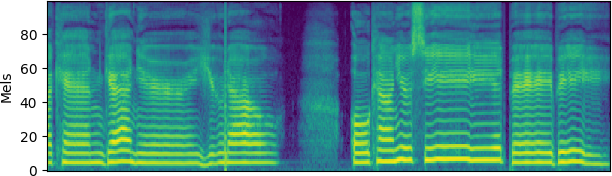 | 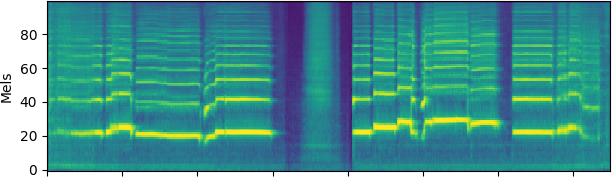 | 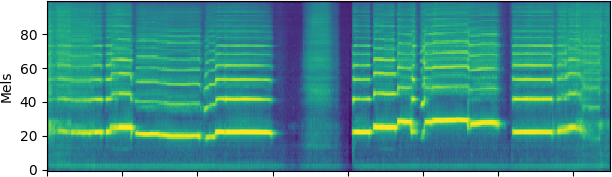 | 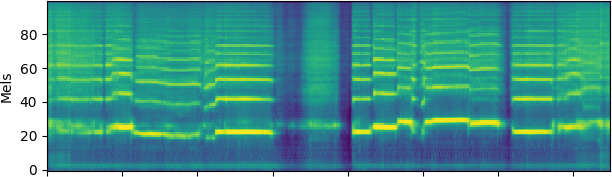 |
| 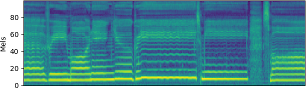 | 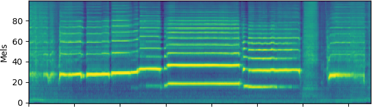 | 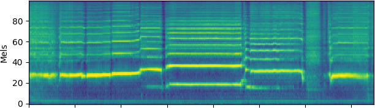 | 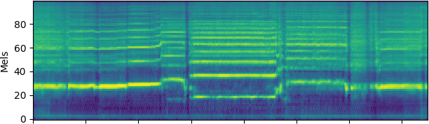 |
| 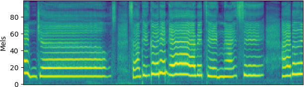 | 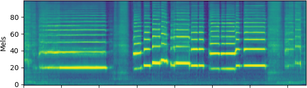 | 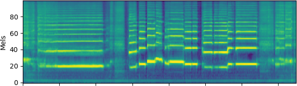 | 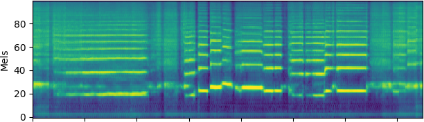 |